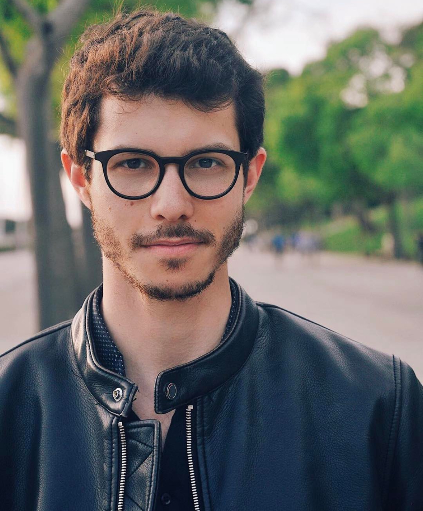

Hello there!
My name is Pedro Teixeira, i'm from Portugal and i'm an electrical engineer working, currently, as Projects and Orders Management Team Leader.
In the last couple of years, i started to be curious about the IT sector. This curiosity led me, at a first stage, to explore the Agile framework which most of the IT Teams work on and therefore studied to be a Certified Product Owner (PSPO), which i finished on December 2023.
Since I enjoyed this first contact with the IT sector, i decided to take a deeper dive and give a secound chance on programming (in the university i had 2 courses on C and C++), and that was when i discovered the course The Complete 2024 Web Development Bootcamp by Dr Angela Yu.
This course has been a breath of fresh air that made me believe that joining my strong will and my skills earned during my work path can led me to a new happy and fulfilled stage of life in this sector.
I'm keen to learn more and looking forward to take my chances proving my worth as a Product Owner.